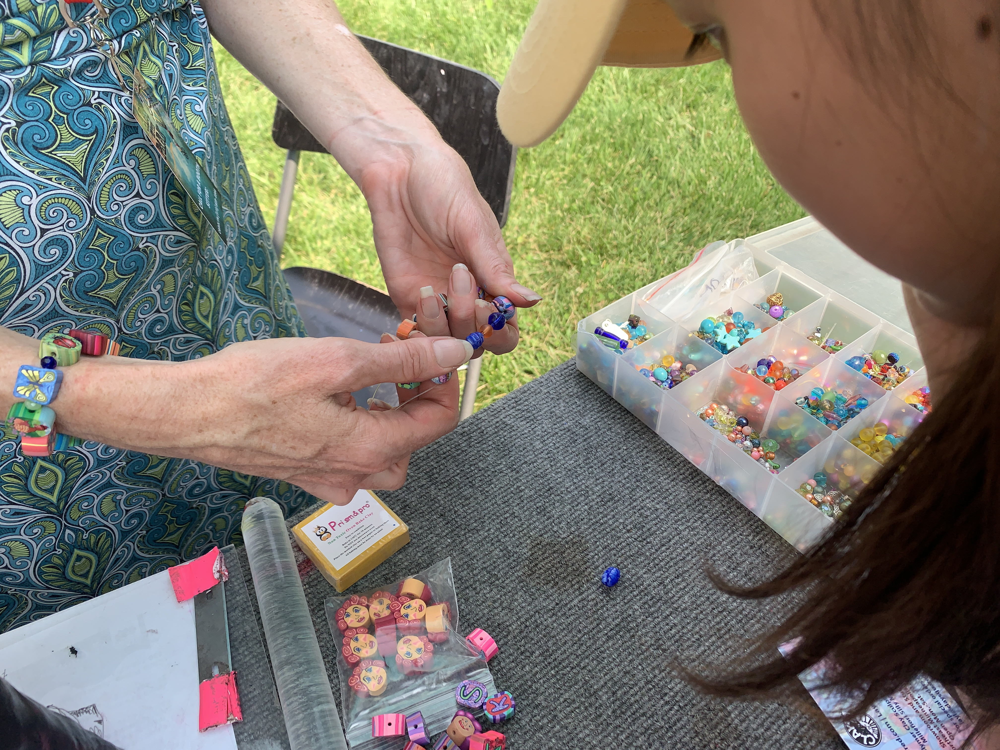

The Only Polymer Clay Sculptor at Art in the Park in 2019
It’s Layl McDill’s first time being a vendor at Art in the Park in Stephens Lake Park, in Columbia. She is a story sculptor from Minneapolis, Minnesota. and spent the past 26 years making polymer clay sculptures.
McDill takes part in art events all over the U.S., and they offer her chances to know the minor different between regions.
“People in the south are more hospitality and people use ‘for’ for every word in the north,” McDill said.

McDill starts with a sketch and piles up clay that matches the pattern. Then she will compress and stretch the clay pile until they are firm and poreless.
Every artwork she made is “one of its kind,” McDill said. Though some are made from the same pattern, the strength she applied varies.
“I don’t mind sharing my method with others,” said McDill.
“If anyone is willing to make polymer clay sculptors for 26 years like me,” McDill said. “I will help them.”
Contact: xfrm7@mail.missouri.edu